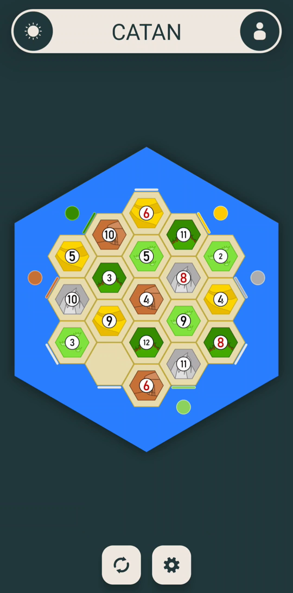

Catan Map Generator
I built an app that speeds up board setup and lets players decide how to distribute terrain and numbers before the game begins.
Setting up a game
The generator supports the 19-tile base board and a 30-tile expansion. For example, players can keep matching terrain tiles apart or prevent neighbouring tiles from getting numbers with the same odds.
Players can generate the terrain and reveal the numbers afterwards, so they can set up the physical board in stages.
How I built it
I built the Android app in Kotlin, drew the grid with Canvas and wrote a generator that searches for layouts that match the chosen rules. I reused two ModuleDroid plugins for settings and for restoring the board when the screen is recreated.
View ModuleDroid
CATAN

App settings
Terrain rules
- Keep matching terrain tiles apart
- Keep tiles of the same type apart, such as two forests.
- Keep terrain away from matching ports
- For example, keep a forest from bordering a wood port.
Number rules
- Keep numbers with equal odds apart
- Keep neighbouring tiles from getting numbers with the same odds on the dice.
- Keep 2 and 12 off ore and clay tiles
- Exclude the least likely numbers from ore and clay tiles.
- Avoid repeated odds within a resource
- For example, keep two forests from having the same chance of producing wood.
- Balance the odds across resources
- Aim for similar average production odds across wood, wheat, sheep, ore and clay.